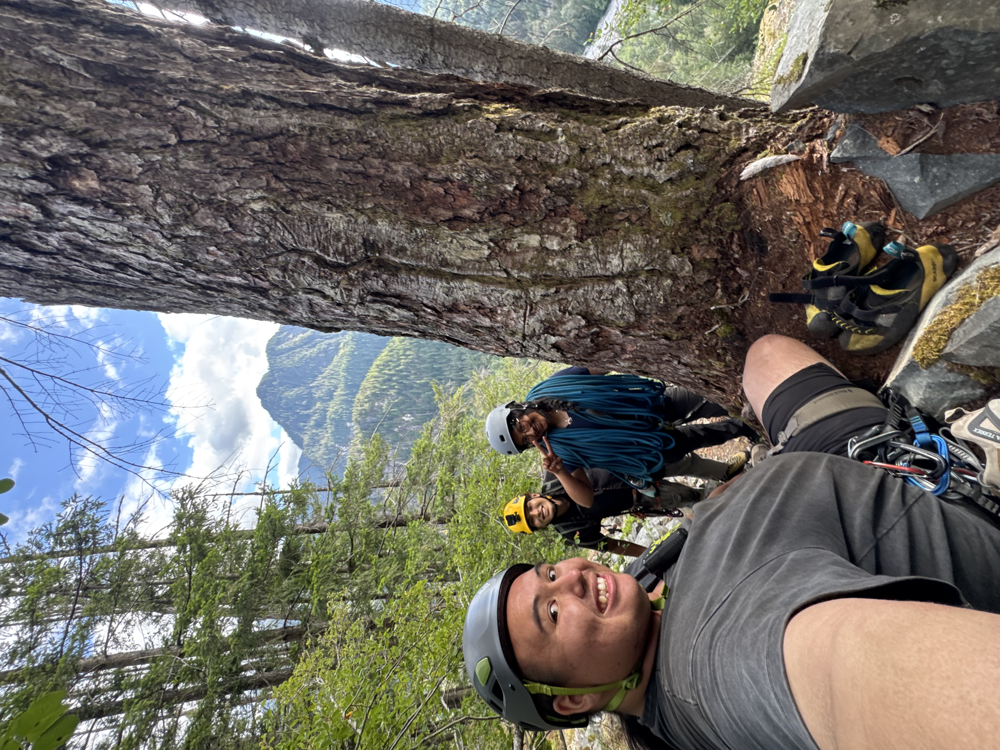
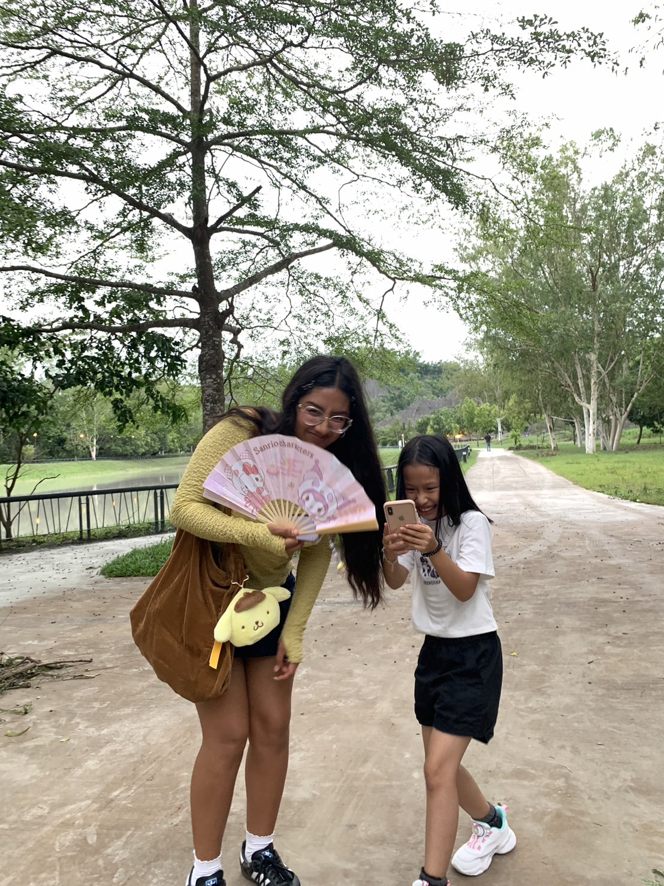
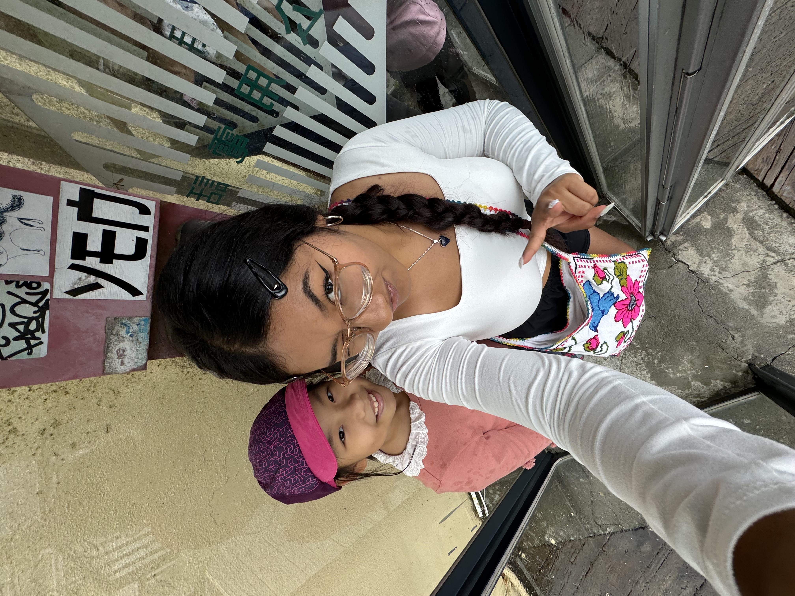

Hi! I'm Diana, a third-year Electrical Engineering student at Stanford University, where I'm advised by Professor Choi. I'm fascinated by how electrical systems come together in complex, multidisciplinary projects. My experiences have ranged from designing avionics and electrical systems for rockets to testing sensor systems for particle detectors and HVAC applications. Along the way, I've become especially interested in semiconductor technologies, RF and antenna systems, and the interfaces between electrical, mechanical, and software systems. Outside of engineering, you'll usually find me rock climbing, surfing, skating, running, or learning a new language.
Projects
🚀 New Collins
So, let me tell you about New Collins...lol...
Course Staff

Spongebob Squarepants
Instructor

Pumpkin Yan
Head TAbby

Perry the Platypus
A Platypus? PERRY THE PLATYPUS??

Jerry Cain
Faculty Sponsor

poohbear
who this
Contact: bbyan [at] stanford [dot] edu
Office Hours: I'll be around after class, or email/Slack me and we can find a time! Happy to chat about course material, CS, Stanford life in general, anything!
Experience
Sentiment Analysis and Refugee Tweets — Apr 10
CS for Climate Change — Apr 17
Cybersecurity and Ethical Hacking — May 1
Open Source & Web Software — May 8
Trust and Safety — May 15
Mental Health — May 22
What's Next? Beyond CS106S, End-Term Boba Party 🧋 — May 29
Final exam! Worth 100% of your grade 🍀.
Personal
Rock Climbing
🌲 CS106S is a 1-unit, S/NC course that we run in a relaxed, workshop-style classroom environment. Each week, we'll provide active lecture content in a social good ecosystem (e.g., climate change, health, cybersecurity, trust and safety), opportunites for group discussion, and hands-on activities for you to practice your programming skills and build relevant applications. We will introduce JavaScript, and the basics of web development; no prior experience in these areas is needed or expected. Though please note this is not a dedicated web programming or web applications course, unlike courses such as CS 106AX 💙, CS 147L, CS 142, or CS 193X.
👋 The course is designed for students who are taking or who have taken CS106B—though this is not a strict requirement, and anyone is welcome to attend! Please feel free to talk to us on whether CS106S is the best option for you.
🧭 CS106S meets on Thursdays, 4:30 - 6:20pm, in Lathrop 180. Except in cases where students miss more than 2 classes (which I'm happy to discuss on a case by case basis, typically with a short, non-coding make-up assignment), no work will be required outside of our class meetings.
📬 If you have any questions, please feel free to email me at bbyan@stanford.edu!



Requirements and Grading
Grading is based on attendance, participation, and the power of friendship: to receive credit, students must attend a minimum of 7 out of the 9 weekly classes. If you have to miss more than 2 classes due to extenuating circumstances (e.g., illness, personal crisis, need time to take care of yourself and your well-being, etc.), please reach out to receive an excused absence. You won't have to elaborate; I trust you. If you miss class, please email me as well! Our guiding principles are (1) we understand life can be very stressful and challenging, and so (2) we will always create a path for you to pass the class.
Surfing
To check attendance, each class will have a brief check-off form. It contains some quick questions from class and feedback prompts. I expect it to take no more than 5 minutes, and time is alloted at the end of class to complete it—though for flexibility, the form will kept open until 11:59 PM PT the class day.
Running
All students are expected to abide by Stanford's Honor Code.
Language Learning
I'm bilingual in English & Spanish, have been learning Chinese 中文 for about a year and a half, and just started learning Thai! Fun Fact: Before coming to Stanford, I studied abroad for 2 months during the summer in Taiwan through a govenment-sponosed scholarship, living with a host family and attending daily Chinese classes at Wenzao University.



FAQ
How can I get involved with CS + Social Good?
The best way to get involved is to contact stanfordcs4good@gmail.com, or to join our mailing list! We send out weekly newsletters with events and opportunities in the tech for social impact space. Everyone is welcome at our events and the email list is the best way to stay informed!
What are your favorite anime films, manga, or TV shows?
Spirited Away / 千と千尋の神隠し (2001), Your Name / 君の名は (2016), Weathering with You / 天気の子 (2019), Attack on Titan / 進撃の巨人, Jujutsu Kaisen / 呪術廻戦
Also Chainsaw Man, Blue Box, Blue Lock, Blue Period, My Hero Academia, Demon Slayer, Mob Psycho 100, One Piece, Hell's Paradise, and Alice in Borderland 🃏
Looking Forward to an Amazing Quarter
Teaching this 1-unit wonder has been a truly wonderful privilege and joy for me, because of all the free boba over the years. Thank you for being here to learn with us, and I hope this will be very fun for you! 🌱🌱🌱